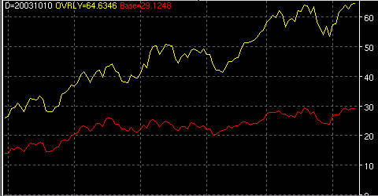
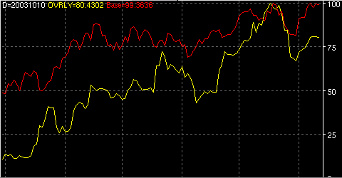

Price/Performance Overlay - OVRLY

Fig 1. Compare performance of SP500 (red) vs. NASDAQ (yellow).

Fig 2. Compare price of SP500 (red) vs. SCOX (yellow)
Parameters:
- Base Color - Base symbol plot color
- Base Line Type - The base symbol line type to plot
- Base Label - The text that identifies the base symbol plot
- Base Symbol - The base symbol to use for comparison
- Color - The current symbol plot color
- Line Type - The current symbol line type to plot
- Label - The text that identifies the current symbol
- Method - The method of comparison to plot
- Compare Performance - % performance from first bar loaded of
both base and current symbols.
- Compare Price - Normalized price of both base and current
symbols.
Description:
The price/performance overlay allows you to plot and compare 2 symbols
on the same chart. This is good for showing relative performance
between 2 symbols ie. comparing an index (NASDAQ) with a component
(MSFT). The user sets a base symbol for all comparisons. The base
symbol and the currently loaded chart is then used for all
calculations. There are 2 methods available. Compare performance plots
the % gain/loss starting from the first bar loaded. Compare price plots
a normalized price plot in order to keep a sane scaling ratio.
Alerts:
None